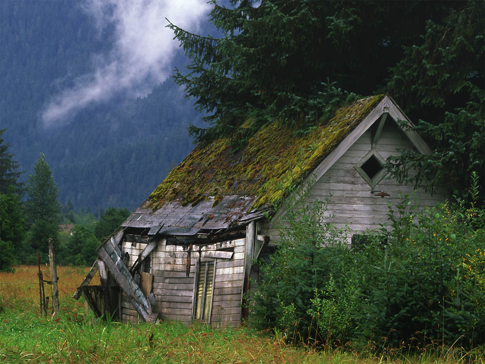
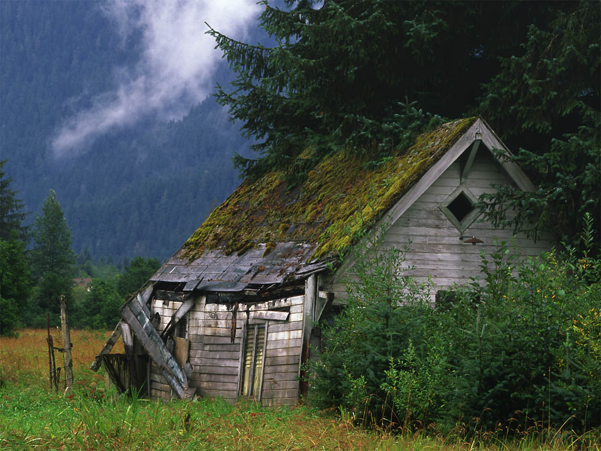
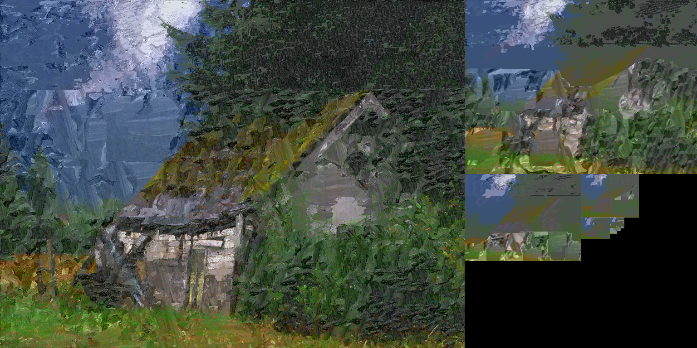

For this assignment, I will be implementing the Image Analogies algorithm as discussed in the paper available here.
The download has been removed so that GitHub stops complaining.
The k value is the weight between coherence and approximate matching. The paper discusses different weights they used; if none is specified, the program defaults to k=5.
The epsilon value is the amount of error allowed to the Approximate Nearest Neighbor search. This value defaults to five; setting it to zero will incur a vastly increased time cost with only marginal subjective benefit.
There are also a few debug options available, listed here.
-reduce
This will run a single pass of the reduce function which is used to create the
Gaussian Pyramids. This first applies a gaussian blur, then does a simple subsample
to reduce the image’s dimensions by half.
-max_levels
This will limit the maximum number of levels the Gaussian Pyramids are permitted.
This may be desirable if all source images are very large, although the higher
levels of the Gaussian Pyramids require radically less computation than the lower,
and so saved time will be marginal.
-gp
This
calculates the Gaussian Pyramid for the source image and outputs the flattened
pyramid.
-rgp <out_file>
This outputs
the pyramid calculated during the creation of the image analogy to the given output
file.
-lumi <base_file>
This does a
luminance transfer from the base file to the standard input file.
The process of Image Analogies has four major steps, as described in the paper. First, Gaussian Pyramids are created by blurring and then subsampling an image, blurring and then subsampling the resulting image, and repeating this process until one has an image which is too small to be blurred and subsampled. In the paper, a level of the pyramid with a low number represents a level with high coarseness - that is, the image has been blurred and subsampled more times than a level with a higher number. However, I represent them in the opposite manner, as this was the manner I felt was most naturally implemented. An example of a Gaussian Pyramid flattened into a single image is displayed below.

The Gaussian Pyramid allows the image to be analyzed at differing levels of coarseness; because there are fewer pixels in a higher level of the pyramid, a broader scope of the image's features may be inspected using the same operations as would be used to analyze fine details at a lower level of the pyramid.
The next step is to calculate the feature vectors for each pixel. These are used for searching and comparing which pixel is ideal for each location as the new image is constructed. While it would make initial sense for these to be the RGB values for each pixel, and it is suggested as such in the paper, further inquiry shows that the ideal feature vector for each pixel is actually just the single luminance value for the pixel. In the paper, it is referred to as the Y value in the YIQ scale*. This allows scenes which are diverse in color to be compared intuitively, as the colors are effectively normalized to the luminance scale. The colors are then reconstructed from the B image in a sort of luminance transfer; an example is displayed below, in which the luminance from the first image is transferred to the second to produce the third.


The first two images were used for training (A and A'), the third image as the base (B) image, and the final image is the resulting B' image. The B' image below was created using k=1, epsilon=5.0.

 
 While far from pretty, the gaussian pyramid generated alongside this image is displayed below. Like the images above, it has been scaled to fit the page.
These results are looking pretty good; however, it should be noted that no displacement is occuring here. The color at each pixel is the luminance from the selected A' pixel matched with the I and Q values from the source B pixel at the destination location; thus, despite the strokes applied to the roof of the shed being curved, one can notice that there remains a distinct straight edge to the shed. This is extracted from the shed for clarity below.

The following images illustrate the difference between epsilon=0 and epsilon=5; The first image is the basis for the second two, using the Reflection images from above as the A and A' material. The second image uses epsilon=0, and took a great deal of time, and the third image uses epsilon=5, and took less than a minute to produce.
A similar filter is attempted with a line art style; the three source images are displayed first in A, A', B order, followed by three synthesized images. The three synthesized images are all created with epsilon=3, and are k=1, k=2, and k=3, respectively. Note the change from the diagonal lines to vertical lines, as well as the use of the patched area from the bottom of the source fountain picture on the sides of the mandrill’s face. An unfortunate drawback of my implementation is that it does not recognize the fact that A and A' are near-black-and-white, and that the B' image should be similarly colored. It is worth noting that in the images provided with the paper, the B images provided were already greyscale. The artifacts near the top are caused by an unknown bug (suspected to be the lack of brute-force search near edges and then cascading effects down the pyramid), and appear with other line art tests.

I used the same Approximate Nearest Neighbor library used in the paper’s implementation, which may be found here. The problems arising from using this were limited to mistakes in memory management and allocation.
A major setback in creating this arose from a slight misunderstanding of the fopen call; I opened files for reading, not recalling the difference between standard read and binary read, which led to all opened files being misread and many hours of debugging and many early images looking like variations of vertical or diagonal lines.
Upon fixing that, results were good almost instantaneously. There were at one point bugs in the YIQ to RGB translation, although adding clamping and rereading the Wikipedia article saw quick fixes to these problems.